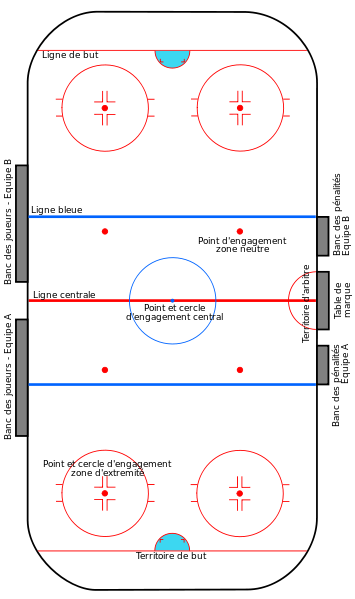
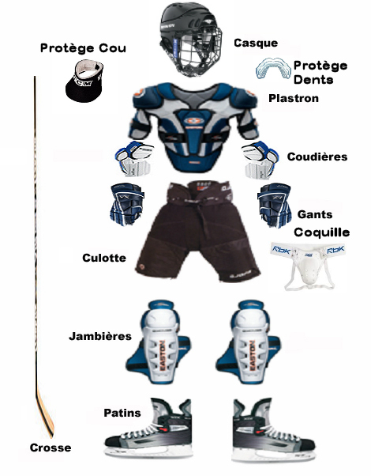
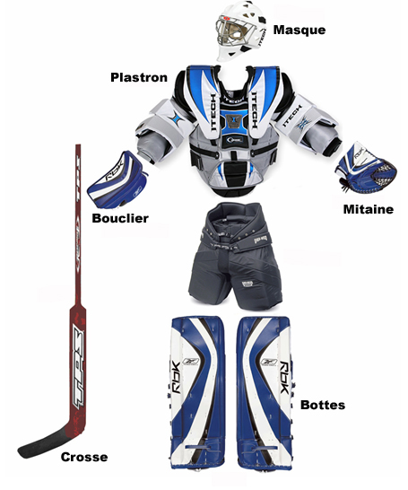

Le hockey sur glace, est un sport d’équipe se jouant sur une patinoire spécialement aménagée.
L’objectif de chaque équipe est de marquer des buts en envoyant un disque de caoutchouc vulcanisé,
appelé rondelle ou palet, à l’intérieur du but adverse situé à une extrémité de la patinoire
L’équipe se compose de plusieurs lignes de cinq joueurs, qui se relaient sur la glace,
ainsi que d'un gardien de but, qui se déplacent en patins à glace et manipulent la rondelle à l’aide d’un bâton de hockey.
La Patinoire

Le hockey sur glace se joue sur une patinoire qui peut être soit intérieure soit extérieure,
la glace pouvant être naturelle ou artificielle. Il existe différentes tailles de patinoires
mais la Fédération internationale de hockey sur glace définit des dimensions réglementaires :
entre 56 et 61 m de long et entre 26 et 30 m de large. L'aire de jeu possède des angles arrondis
avec un rayon compris entre 7 et 8,5 m. Des glaces de protection doivent être installés au-dessus
des bords de la patinoire, les glaces faisant entre 1,60 et 2 m de haut derrière les buts et au minimum
80 cm de hauteur sur le reste de la patinoire. Plusieurs parties composent la patinoire : une zone défensive
entre le fond de la patinoire et la première ligne bleue, une zone neutre entre les deux lignes bleues et enfin
une zone offensive entre la deuxième ligne bleue et l'autre extrémité de la glace. Des lignes rouges au nombre de trois
coupent également la patinoire dans le sens de la largeur : une ligne au centre de la patinoire et deux lignes constituant
les lignes de but et distantes de chaque extrémité de 4 m. Les lignes bleues sont tracées de manière que l'espacement entre
ces deux lignes soit égal. En Amérique du Nord, le territoire de but a également deux lignes rouges qui sont situées
derrière le but qui forme un trapèze. La zone ainsi délimitée est la seule où le gardien de but peut toucher le puck
avec son baton; en dehors de cette dernière, une pénalité mineure lui est infligée. Différents points d'engagement
sont présents sur la patinoire. Le point principal se trouve au milieu de la ligne centrale. Dans la zone neutre,
il existe quatre autres points d'engagement. Deux sont situés du côté de la zone offensive d'une équipe, un à gauche
et l'autre à droite, à 1,5 m de la ligne bleue ; et deux sont situés du côté de la zone offensive de l'autre équipe de
manière symétrique. Les quatre derniers points d'engagement sont placés deux à deux dans la zone défensive de chaque équipe,
un de chaque côté des buts. Les points servent à réaliser les engagements. À chaque début de période ou après chaque but,
la remise en jeu se fait au centre de la patinoire. Pour les autres arrêts de jeu, c'est le point le plus proche de l'endroit
où le jeu a été arrêté qui est utilisé (sauf cas de hors-jeu ou de dégagement interdit). Autour du point central et des points
situés dans les zones défensives, des cercles de 4,5 m de rayon sont tracés au sol80. Le point central est également le point de
départ des tirs de fusillade et des lancers de pénalité. Les buts de chaque équipe sont placés au centre de la ligne de
but et sont constitués de deux poteaux de 1,22 m de haut séparés de 1,83 m. Ils sont reliés ensemble par une barre transversale.
L'ensemble des éléments sont des tubes de 5 cm de diamètre et peints en rouge. Les buts sont complétés par un filet blanc qui doit
se situer entre 60 et 1,12 cm de la ligne de but.
Déroulement d'un match
Un match débute par un engagement au centre de la patinoire. Lors de cet engagement,
chaque équipe se place du côté de son banc de touche. Les équipes changent de côté
lors des autres périodes que ce soit les périodes du temps réglementaire ou des prolongations
éventuelles. Un joueur de chaque équipe se place de part et d'autre du point central et attendent
que l'arbitre jette le palet sur la glace. Avant l'engagement du début du match, l'équipe jouant à
l'extérieur fournit au corps arbitral le nom de ses cinq joueurs commençant la rencontre. Cette liste de cinq
joueurs de départ est transmise à l'équipe domicile qui donne alors à son tour le nom de ses cinq joueurs.
L'objectif du hockey est d'inscrire plus de buts que l'équipe adverse. Pour inscrire un but au hockey, il faut que
le palet franchisse entièrement la ligne de but adverse entre les deux poteaux de buts et la transversale. L'arbitre peut
décider de refuser le but dans plusieurs cas ; par exemple, si la rondelle est poussée volontairement du patin par un joueur
de l'équipe qui attaque ou si un joueur est présent dans la zone réservée au gardien de but. Les règlements des différentes
ligues présentent un grand nombre de cas d'exclusion et de validation d'un but. Un match dure trois périodes de 20 minutes
chacune, l’horloge étant arrêtée à chaque arrêt de jeu. En cas d’égalité à la fin du temps réglementaire, selon les championnats
soit le match est déclaré nul soit il faut un vainqueur. Le match peut alors se poursuivre avec une ou plusieurs périodes de
prolongation en mort subite. Dans certains cas, une séance de tirs de fusillade peut se dérouler. Le hockey sur glace est un jeu
physique au cours duquel des contacts sont autorisés entre les différents joueurs. Il s'agit, avant tout, de gêner l'adversaire,
de le déstabiliser lors de prochains contacts, de le fatiguer et de lui faire perdre le palet. C’est une technique de base au hockey
appelée mise en échec. Toutefois, les actions dangereuses ou contraires aux règles, sont sanctionnées par des pénalités ou punitions ;
les mises en échec sont donc très surveillées et sont soumises à un certain nombre de conditions. Mal effectuée, une mise en échec peut
blesser un joueur et des pénalités peuvent en découler. Un match peut également comporter des combats entre joueurs, combats tolérés
ou interdits selon les ligues et les compétitions. Ainsi, dans le cadre d'un match couvert par la Fédération internationale, tout
joueur se battant contre un autre en enlevant ses gants reçoit une pénalité de méconduite et tout joueur commençant à se battre reçoit
une pénalité de match. La LNH, quant à elle, autorise sous certaines conditions les combats entre deux joueurs qui recevront alors
chacun une pénalité majeure. Les règles des combats sont toutefois extrêmement encadrées afin d'éviter les dérives et plusieurs pages du
règlement couvrent les différents cas. Sous certaines conditions, une faute en jeu peut entraîner un tir de pénalité. Cinq conditions
sont nécessaires pour qu'un lancer de pénalité soit accordé : que le palet ait quitté la zone défensive, que le joueur attaquant soit
en possession de la rondelle, que la faute soit commise par derrière, que le joueur ait une chance raisonnable de marquer le but et
enfin que le seul obstacle au but soit le gardien. D'autres cas, moins fréquents, peuvent également conduire à un lancer de pénalité
mais tous les cas relèvent de la décision finale du corps arbitral. Lors du tir de pénalité, tous les joueurs rejoignent leur banc ;
les deux seuls joueurs restant sur la glace sont le gardien de l'équipe ayant réalisé la faute et le tireur. Le palet est placé sur le
point central de la patinoire alors que le gardien de but doit rester sur sa ligne de but. Au coup de sifflet de l'arbitre, l'attaquant
peut prendre le contrôle de la rondelle, se diriger vers le but et essayer de marquer. Une fois le palet touché par l'attaquant, le
gardien peut quitter sa ligne de but. L'attaquant ne peut prendre qu'un seul tir et une fois que la rondelle a franchi la ligne de but,
le tir de fusillade est considéré comme terminé. Lors d'un tir de pénalité, le palet doit toujours avancer en direction de la cage et
ne peut jamais reculer. Le jeu est immédiatement arrêté après un tir de fusillade. En cas de but l'engagement a lieu au centre de la
patinoire, en cas de tir infructueux, l'engagement a lieu dans la zone où le tir a été effectué.
L'équipement des Joueurs

Tous les joueurs et gardiens de hockey doivent porter tout un ensemble d'équipements :
des patins à glace, une crosse, une tenue complète et des protections. La crosse, également bâton
ou plus simplement hockey, doit être faite en bois ou tout autre matériau approuvé. Chaque joueur a le
droit de mettre en place de la bande adhésive sur son bâton86. Les dimensions de la crosse sont libres jusqu'à
un certain niveau : la partie droite fait au maximum 163 cm de long sur 3 cm de large et 2,5 cm d'épais. Cette partie
droite est prolongée d'une palette incurvée de 32 cm de long maximum, 7,5 cm de large et 5 cm d'épais. La palette peut
être courbée pour donner plus de force au lancer. La tenue du joueur de hockey est composée d'un maillot, également
appelé chandail au Québec, une culotte, cuissette au Québec, et des bas. Une couleur de base doit être prédominante sur
l'ensemble des équipements et le maillot doit être porté en dehors de la culotte. Chaque joueur doit porter sur son dos
un numéro et dans les compétitions internationales, le joueur doit également porter son nom dans son dos. Dans de nombreuses
ligues, chaque équipe possède plusieurs couleurs d'uniformes ; ainsi dans la LNH, les maillots domiciles sont de couleurs foncées
alors que les maillots extérieurs sont plutôt clairs. Que ce soit pendant l'échauffement ou pendant le match, tout joueur doit
porter un casque avec une jugulaire pour tenir le casque sur la tête du joueur. Le casque doit être le même pour tous les
joueurs de l'équipe sauf pour le gardien qui a le droit de porter un casque d'une autre couleur. Tous les joueurs portent
des gants qui doivent couvrir l'ensemble de la main et également le poignet du joueur. Avec le casque, ce sont les
deux seuls équipements de protection qu'un joueur doit porter au-dessus des habits du joueur. En dessous du maillot,
le joueur peut porter des épaulières, un plastron et des coudières. La culotte est souvent directement dotée de
mousse pour protéger les cuisses. Les joueurs portent également une coquille et des jambières tenues par les bas
et couvrant du genou jusqu'aux patins.
Équipement du gardien

Les gardiens de buts sont plus exposés que les joueurs de champs et leurs équipements de protection
doivent donc être plus complets. Ainsi, les gardiens portent un plastron plus complet qui couvre mieux
les bras et tout l’avant de la taille jusqu'au cou, également une culotte plus épaisse et un masque en plus du casque.
Pour un gardien de but, la partie droite de la crosse fait au maximum la même longueur mais sur 71 cm, elle a le droit
d'être plus large, jusqu'à 9 cm de large. La palette est également de taille différente puisqu'elle peut mesurer 39 cm
pour une largeur de 9 cm. Tout joueur cassant son bâton sur la glace peut continuer à jouer s'il lâche les bouts cassés
; il a le droit de continuer à jouer sans crosse ou selon son choix de revenir vers son banc d'équipe pour se voir donner
un nouveau bâton par un de ses coéquipiers. Les patins des portiers sont protégés par une coque avec une lame plus longue
et plus plate que des patins de joueur pour une meilleure stabilité du gardien. Alors que les joueurs ont deux gants identiques,
ceux des gardiens sont différents l'un de l'autre : une mitaine, permet d’attraper le palet, et sur l'autre main, un bouclier,
aussi appelé plaque, accroché à un gant permet de tenir la crosse et de repousser la rondelle. La plaque doit mesurer au maximum
38,1 cm de long par 20,32 cm de large alors que la mitaine doit avoir un périmètre de 114,3 cm au maximum119. Pour se protéger
les jambes, les gardiens portent des jambières, également appelées bottes, qui doivent faire au maximum 28 cm de large ;
ces bottes sont tenues par des lanières au-dessus des bas.